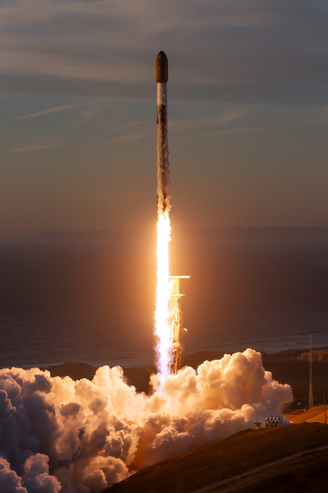
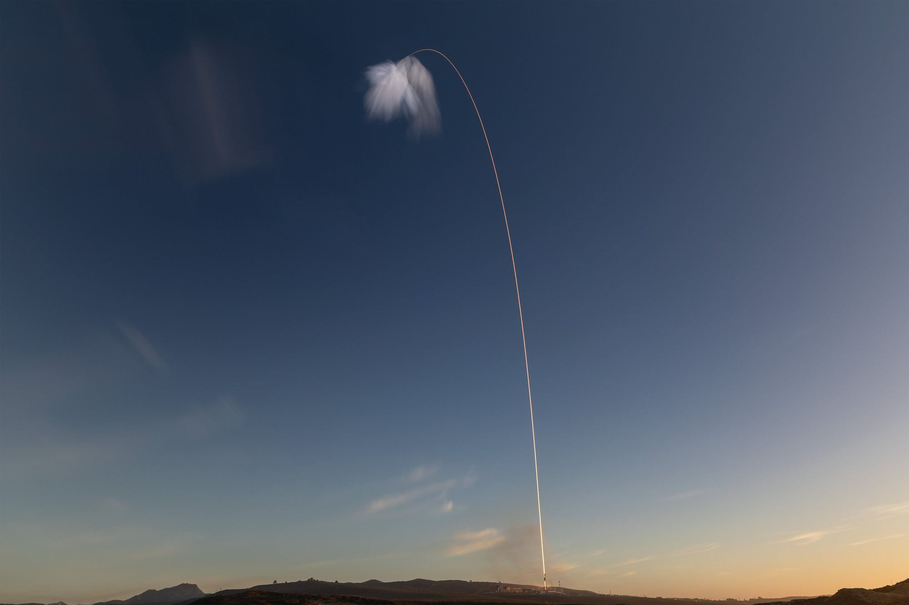
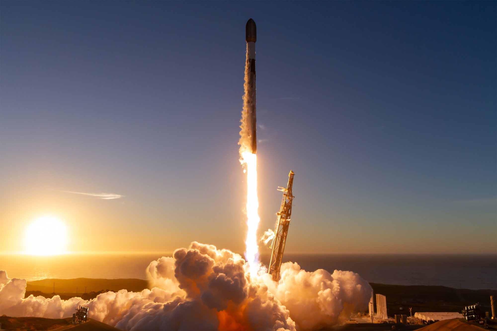

Venerdì 6 novembre, alle 16:48 ora del Pacifico, quando in Italia erano le 01:48 di sabato, un Falcon 9 si è alzato dallo Space Launch Complex 4E della base di Vandenberg, sulla costa centrale della California, con il sole che scendeva nell'oceano. La missione si chiama USSF-432 ed è un lancio per la United States Space Force di cui, ufficialmente, non si sa quasi nulla. Eppure non è un salto nel buio: è il quarto volo di una serie che da agosto sta costruendo, un pacchetto da 23 satelliti alla volta, una costellazione militare in orbita bassa basata sulla tecnologia Starlink.
Com'è andato il lancio
Il conto alla rovescia si è chiuso senza intoppi. Poco dopo le 16 locali SpaceX aveva comunicato che tutti i sistemi erano in ordine e il meteo favorevole, dando il via al caricamento di ossigeno liquido e cherosene. Il Falcon 9 ha preso una traiettoria verso sud-est, lasciandosi alle spalle la costa californiana; la base aveva avvisato i residenti delle contee di Santa Barbara, San Luis Obispo e Ventura che avrebbero potuto sentire uno o più boom sonici, a seconda del meteo.
La sequenza pubblicata da SpaceX è quella standard di un volo con recupero in mare: massima pressione dinamica a poco più di un minuto, spegnimento dei nove motori del primo stadio a 2 minuti e 25 secondi, separazione tre secondi dopo e accensione del secondo stadio, poi distacco dell'ogiva a 2 minuti e 54 secondi. Mentre il secondo stadio proseguiva verso l'orbita, il primo ha acceso i motori per il rientro e poi per l'atterraggio, toccando il ponte della chiatta Of Course I Still Love You, posizionata nel Pacifico al largo della Baja California, circa 8 minuti e 23 secondi dopo il decollo.
A quel punto la diretta si è interrotta, come accade sempre nelle missioni classificate: circa dieci minuti dopo il decollo il pubblico ha perso di vista il secondo stadio e il suo carico. Nelle ore successive SpaceX ha pubblicato le foto del lancio con un messaggio asciutto: Falcon 9 ha portato USSF-432 in orbita. Nessun dettaglio su quota, inclinazione o numero di satelliti.

Che cosa c'è sotto l'ogiva
La Space Force non ha detto nulla sul carico, e non è una novità: per l'intera serie ha declinato ogni richiesta di informazioni. Il quadro, però, si ricostruisce bene dall'esterno. Nei documenti pubblici la missione compare anche con la sigla R-4. La serie «R» è iniziata il 16 agosto con USSF-366, è proseguita con USSF-153 (R-2) il 10 settembre e con USSF-385 (R-3) il 26 settembre. Ognuno di quei voli ha lasciato in orbita 23 oggetti, registrati nel catalogo orbitale.
Jonathan McDowell, l'astrofisico che da decenni tiene il registro più autorevole dei lanci spaziali, colloca questi satelliti nel programma Space Based Sensing and Targeting della Space Force: un programma che, come dice il nome, punta a rilevare e seguire bersagli dallo spazio e a passare i dati alle forze armate. Gli stessi osservatori ritengono che i satelliti siano costruiti sulla piattaforma Starshield, la versione governativa e militare dei satelliti Starlink. Un indizio concreto viene dalle zone di ricaduta degli stadi, che coincidono con quelle dei lanci Starlink del Gruppo 15 da Vandenberg.
Un database specializzato in piccoli satelliti elenca già, per R-4, 23 carichi con designazioni da USA-726 a USA-748. È una ricostruzione esterna coerente con i voli precedenti, non una conferma ufficiale: finché i radar del catalogo non registrano gli oggetti, il numero resta un'attesa ragionevole.

Starshield, la Starlink con le stellette
Starshield è il ramo di SpaceX che costruisce satelliti e servizi per il governo statunitense e per gli alleati. Il principio è lo stesso che ha reso Starlink la costellazione più grande della storia, con oltre 11.000 satelliti attivi: una piattaforma prodotta in serie, economica, lanciata a decine per volta e capace di dialogare tramite collegamenti laser. Sopra quella base si montano carichi diversi, dalle comunicazioni protette ai sensori di osservazione. Per il Pentagono il vantaggio è la quantità: centinaia di satelliti in orbita bassa sono molto più difficili da accecare o distruggere di pochi grandi satelliti in orbita alta.
Le missioni R raccontano proprio questo cambio di scala. In meno di tre mesi quattro lanci hanno portato in orbita, se il conto degli osservatori è corretto, circa 92 satelliti dello stesso programma. È un ritmo che solo un'azienda con un razzo riutilizzabile pronto a volare ogni pochi giorni può sostenere, ed è una delle ragioni per cui gli Stati Uniti dipendono sempre più da SpaceX per la sicurezza nazionale nello spazio. Sul sito abbiamo già raccontato il peso politico di Starshield nel dossier sul ruolo dei satelliti SpaceX in Ucraina.

Un booster arrivato dalla Florida
Il primo stadio B1095 è al suo ottavo volo. La sua carriera è iniziata sulla costa opposta: ha lanciato il satellite di navigazione GPS III-8 e sei missioni Starlink da Cape Canaveral e dal Kennedy Space Center, poi ad aprile ha attraversato gli Stati Uniti per essere assegnato a Vandenberg. Lo spostamento non è casuale. Gran parte dei lanci Falcon 9 delle ultime settimane parte dalla California, mentre in Florida SpaceX concentra uomini e mezzi sulla preparazione del primo lancio di Starship dalla costa est.
| Data | Missione | Che cosa sappiamo |
|---|---|---|
| 16 agosto 2026 | USSF-366 (R-1) | Primo volo della serie; 23 oggetti nel catalogo orbitale |
| 10 settembre 2026 | USSF-153 (R-2) | 23 oggetti nel catalogo orbitale |
| 26 settembre 2026 | USSF-385 (R-3) | 23 oggetti nel catalogo orbitale |
| 7 novembre 2026 (01:48 ora italiana) | USSF-432 (R-4) | Decollo e atterraggio confermati; rilascio dei satelliti non comunicato |
I numeri dell'anno
USSF-432 è il 119° lancio di Falcon 9 del 2026 e la 125ª missione SpaceX dell'anno. È anche il quattordicesimo volo per la sicurezza nazionale affidato al Falcon 9 dall'inizio dell'anno, in un calendario dove oltre il 70 per cento dei lanci resta dedicato a far crescere Starlink. Per la flotta di recupero è stato il 336° atterraggio consecutivo riuscito di un primo stadio. Numeri che ormai passano quasi inosservati, ma che spiegano perché un lancio militare segreto sia diventato una routine da venerdì sera.
Che cosa aspettarsi adesso
Nei prossimi giorni il segnale da guardare è il catalogo orbitale: se compariranno 23 nuovi oggetti con designazione USA, la ricostruzione degli osservatori sarà confermata anche per R-4. Dalla Space Force non ci si aspetta un comunicato, vista la linea tenuta finora. Per SpaceX, intanto, l'attenzione torna su Starbase: Starship Flight 15, con il tentativo di catturare sia il Super Heavy sia la Ship con i bracci della torre, punta a non prima del 13 novembre, in attesa del via libera della FAA.
Il dossier su Flight 15 passa all'archivio Notizie e resta il riferimento per il volo della prossima settimana; questa pagina mette in primo piano il lancio di USSF-432 e la crescita, silenziosa ma rapidissima, della costellazione militare costruita su tecnologia Starlink.
Fonti pubbliche e tracce
Ultimo aggiornamento editoriale: 7 novembre 2026. Nel corpo non si ripete la fonte a ogni frase: le tracce sono raccolte qui. Natura e numero dei carichi sono ricostruzioni di osservatori indipendenti, non dichiarazioni ufficiali.
- SpaceX, pagina di missione USSF-432: orario di lancio, pad SLC-4E, ottavo volo del booster (GPS III-8 e sei Starlink), atterraggio su Of Course I Still Love You, avviso boom sonici, sequenza degli eventi.
- SpaceX su X, 7 novembre 2026: «Falcon 9 launches USSF-432 to orbit», con le foto usate in questa pagina; post precedenti su meteo favorevole, decollo e atterraggio del primo stadio.
- Spaceflight Now, Steven Young, 6 novembre 2026: sigla R-4, serie R da USSF-366 in poi, 23 satelliti per lancio dal catalogo orbitale, attribuzione al programma Space Based Sensing and Targeting da parte di Jonathan McDowell, slittamento dal 1° novembre, storia del booster B1095.
- Next Spaceflight, scheda USSF-432: orario 00:48:42 UTC, ipotesi Starshield/SBST basata sulle zone di ricaduta coincidenti con i lanci Starlink Gruppo 15, statistiche di recupero.
- Space.com, 6 novembre 2026: interruzione della diretta dopo l'atterraggio, 119° Falcon 9 e 125ª missione SpaceX del 2026, quattordicesimo volo per la sicurezza nazionale dell'anno.
- Skybrokers, scheda USSF-432 / SBST R-4: elenco di 23 carichi con designazioni USA-726 / USA-748 (ricostruzione esterna).
Fotografie utilizzabili
Non esistono al momento foto a licenza libera di questo lancio. Le tre immagini sono le foto ufficiali SpaceX della missione, pubblicate su X il 7 novembre e usate con credito SpaceX e dicitura «uso editoriale non commerciale». Dettagli in scheda dei crediti fotografici.
Apri il dossier Starship Flight 15 archiviato · Archivio Notizie · Torna a SpaceX